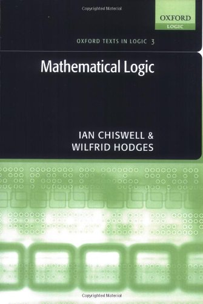

Chiswell & Hodges: Mathematical Logic

Ian Chiswell and Wilfrid Hodges’s Mathematical Logic (OUP, 2007: pp. 249) is very largely focused on first-order logic, only touching on Church’s undecidability theorem and Gödel’s first incompleteness theorem in a Postlude after the main chapters. So this really doesn’t count, either in terms of size or breadth of coverage, as Big Book on Mathematical Logic. But it is very warmly warmly recommended in the Guide, and this is the place to say something more about it.
Let me highlight three key features of the book, the first one not particularly unusual (though it still marks out this text from quite a few of the older, and not so old, competitors), the second very unusual but extremely welcome, the third a beautifully neat touch: - Chiswell and Hodges (henceforth C&H) present natural deduction proof systems not just in a take-it-or-leave-it spirit, but spend quite a bit of time showing how such formal systems reflect the natural informal reasoning of mathematicians in particular. - Instead of dividing the treatment of logic into two stages, propositional logic and quantificational logic, C&H take things in three stages. First, propositional logic. Then we get the quantifier-free part of first-order logic, dealing with properties and relations, functions, and identity. So at this second stage we get the idea of an interpretation, of truth-in-a-structure, and we get added natural deduction rules for identity and the handling of the substitution of terms. At both these first two stages we get a Hintikka-style completeness proof for the given natural deduction rules. Only at the third stage do quantifiers get added to the logic and satisfaction-by-a-sequence to the semantic apparatus. Dividing the treatment of first order logic into stages like this means that a lot of key notions get first introduced in the less cluttered contexts of propositional and/or quantifier-free logic, and the novelties at the third stage are rather easier to keep under control. This does make for a great gain in accessibility. - The really cute touch is to introduce the idea of polynomials and diophantine equations early – in fact, while discussing quantifier-free arithmetic – and to state (without proof!) Matiyasevich’s Theorem. Then, in the Postlude, this can be appealed to for quick proofs of Church’s Theorem and Gödel’s Theorem.
This is all done with elegance and a light touch – not to mention photos of major logicians and some nice asides – making an admirably attractive introduction to the material.
Some details C&H start with almost 100 pages on the propositional calculus. Rather too much of a good thing? Perhaps, if you have already done a logic course at the level of my intro book or Paul Teller’s. Still, you can easily skim and skip.
After Ch. 2 which talks about informal natural deductions in mathematical reasoning, Ch. 3 covers propositional logic, giving a natural deduction system (with some mathematical bells and whistles along the way, being careful about trees, proving unique parsing, etc.). The presentation of the formal natural deduction system is not exactly my favourite in its way of graphically representing discharge of assumptions (I fear that some readers might be puzzled about vacuous discharge and balk at Ex. 2.4.4 at the top of p. 19: you have to re-read just a bit carefully to see how the notation is being used): but apart from this little glitch, this is very done well.
The ensuing completeness proof is done by Hintikka’s method rather than Henkin’s. After a short interlude, Ch. 5 treats quantifier-free logic. The treatment of the semantics without quantifiers in the mix to cause trouble is very nice and natural; likewise at the syntactic level, treatment of substitution goes nicely in this simple context. Again we get a soundness and Hintikka-style completeness proof for an appropriate natural deduction system.Then, after another interlude, Ch 7 covers full first-order logic with identity. Adding natural deduction rules (on the syntactic side) and a treatment of satisfaction-by-finite-n-tuples (on the semantic side) all now comes very smoothly after the preparatory work in Ch. 5. The Hintikka-style completeness proof for the new logic builds very nicely on the two earlier such proofs: this is about as accessible as it gets in the literature, I think. The chapter ends with a look at the Löwenheim-Skolem theorems and ‘Things that first-order logic cannot do’.
Finally, as explained earlier, material about diophantine equations introduced naturally by way of examples in earlier chapters is used in a final Postlude to give us undecidability and incompleteness results very quickly (albeit assuming Matiyasevich’s Theorem).
Summary verdict C&H have written a very admirably readable and nicely structured introductory treatment of first-order logic that can be warmly recommended. The presentation of the syntax of their type of (Gentzen-Prawitz) natural deduction system is perhaps done a trifle better elsewhere (Tennant’s freely available Natural Logic mentioned in the Guide gives a full dress version). But the core key sections on soundness and completeness proofs and associated metalogical results are second to none for their clarity and accessibility.